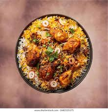

Chicken Biryani
Home

Description
Chicken biryani is a flavorful rice dish made with aromatic basmati
rice, spiced chicken, onions, herbs, and fragrant spices.
Ingredients
- Basmati rice
- Chicken
- Onions
- Tomatoes
- Yogurt
- Ginger-garlic paste
- Biryani spices
- Mint and coriander leaves
- Cooking oil
- Salt
Steps
- Wash and soak the basmati rice for about 20 minutes.
- Marinate the chicken with yogurt, spices, ginger-garlic paste, and salt.
- Cook the onions until golden brown.
- Add the marinated chicken and cook until it is partially done.
- Cook the rice separately until it is partially cooked.
- Layer the rice over the chicken and add mint and coriander leaves.
- Cover and cook on low heat until the rice and chicken are fully cooked.
- Gently mix and serve hot.